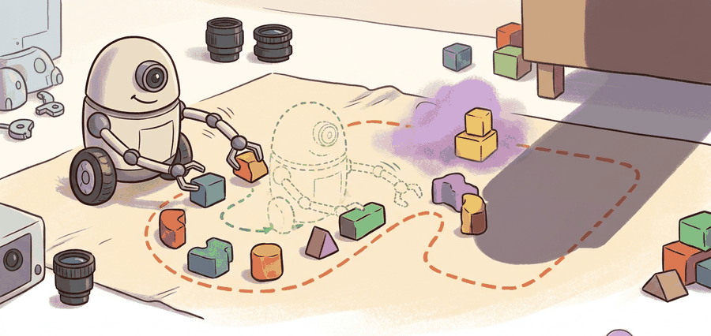

<!DOCTYPE html>

<html lang="en">
<head>
<meta charset="utf-8"/>
<meta content="width=device-width, initial-scale=1.0" name="viewport"/>
<meta content="Section 24.4 of Building Embodied AI: From Perception to Autonomous Action: Empirical data scaling laws in imitation learning." name="description"/>
<title>Section 24.4: Empirical data scaling laws in imitation learning | Building Embodied AI: From Perception to Autonomous Action</title>
<link href="../../styles/book.css" rel="stylesheet"/>
<link href="../../styles/pygments.css" rel="stylesheet"/>
<link href="../../vendor/prism/prism-theme.css" rel="stylesheet"/>
<script defer="" src="../../vendor/prism/prism-bundle.min.js"></script>
<link href="../../vendor/katex/katex.min.css" rel="stylesheet"/>
<script defer="" src="../../vendor/katex/katex.min.js"></script>
<script defer="" onload="renderMathInElement(document.body, {
  delimiters: [
  {left: '$$', right: '$$', display: true},
  {left: '$', right: '$', display: false}
  ],
  throwOnError: false
  });" src="../../vendor/katex/contrib/auto-render.min.js"></script>
<script defer="" src="../../scripts/book.js"></script>
</head>
<body>
<a class="skip-link" href="#main-content">Skip to main content</a>
<header class="chapter-header">
<nav class="header-nav">
<a class="book-title-link" href="../../index.html">Building Embodied AI: From Perception to Autonomous Action</a>
<a class="toc-link" href="../../toc.html" title="Table of Contents"><span class="toc-icon">☰</span> Contents</a>
</nav>
<div class="header-search"><div id="search"></div></div>
<div class="page-breadcrumb"><a href="../index.html">Part V: Learning from Demonstration and Robot Data</a><span class="bc-sep">›</span><a href="index.html">Chapter 24: Robot Datasets and Data Scaling Laws</a></div>
<h1>Section 24.4: Empirical data scaling laws in imitation learning</h1>
</header>
<main class="content" id="main-content">
<blockquote class="epigraph"><p>"The curve kept improving, but only after we stopped mixing validation splits like smoothie ingredients."</p><cite>A Careful Curve Fitter</cite></blockquote>
<figure class="illustration">

<figcaption><strong>Figure 24.4A</strong>: Scaling laws become useful only when data size, model capacity, task coverage, and evaluation splits are measured under one protocol.</figcaption>
</figure>
<div class="callout pathway">
<p>This section assumes familiarity with the imitation learning setup introduced in section 21.2 and with action representations covered in section 22.7. The scaling ideas developed here are applied directly in section 24.5, which addresses data curation and mixture strategies, and connect to evaluation methodology in section 52.2, where matched protocols for measuring policy performance are treated in depth.</p>
</div>
<div class="callout big-picture"><div class="callout-title">Big Picture</div><p>A lab doubles its demonstration count from 500 to 50,000 and watches failure rate drop from 40% to 8%. A rival lab runs the same experiment and sees almost no improvement. Same task, same robot family, different result. The gap almost always traces to a measurement problem: one team held evaluation conditions constant across every data point, and the other did not. Scaling laws are now the central planning tool for robot data investment, because the field is spending millions of dollars on demonstration collection. Getting the curve right, by locking the evaluation panel, split policy, and metric before touching any data, is the skill that turns an expensive scatter plot into a genuine engineering signal.</p></div>
<h2>Power-Law Habit</h2>
<p>A common empirical form is:</p>
<p>$$E(N) = A N^{-lpha} + E_{\infty},$$</p>
<p>where $E(N)$ is an error or failure rate after training on $N$ demonstrations, $lpha$ is the scaling exponent, and $E_{\infty}$ is the irreducible floor under the current setup. For success rates, researchers often fit error or regret rather than success directly because error has a natural decreasing trend. This formulation assumes a well-controlled <a href="../../part-5-learning-from-demonstration-and-robot-data/module-21-imitation-learning/section-21.2.html">imitation learning</a> setup where the data distribution does not shift between collection and evaluation.</p>
<p>The irreducible floor $E_{\infty}$ matters in embodied AI because physical systems have hard failure modes that data volume cannot fix. Joint backlash, calibration drift, sensor noise, and operator-induced bias in teleop demonstrations all create a residual failure rate that persists regardless of dataset size. A policy trained on one million trajectories still fails when the real gripper's compliant finger deforms differently from every demonstration it saw. Ignoring $E_{\infty}$ leads teams to overspend on data collection when the actual bottleneck is hardware or action representation.</p>
<p>Mechanically, the floor emerges because the imitation objective minimizes average loss over the collected distribution. Tasks or object poses near the tail of that distribution appear so rarely that even large datasets leave them underrepresented. The policy converges to low average error, but performance on rare configurations plateaus. Fitting the three-parameter model rather than a pure log-log regression separates this structural ceiling from genuine data-driven improvement.</p>
<div class="callout key-insight"><p>Think of baking a sourdough loaf in an oven that runs 20 degrees too cool. You can use better flour, more precise measurements, and a finer technique, and the bread will keep improving up to a point. But that last 20 degrees of oven temperature is a structural ceiling: no amount of extra skill or better ingredients overcomes it. The irreducible floor $E_\infty$ works the same way. Adding demonstrations refines the policy, but joint backlash, sensor noise, and distributional gaps in the operator pool are the cold oven, and they set a hard lower bound on failure rate that more data simply cannot reach past.</p></div>
<div class="callout key-insight"><div class="callout-title">The Curve Is A Measurement Device</div><p>A scaling curve is not proof that more data solves the task. It tells you whether the current data source, model class, and evaluation panel still reward more data.</p></div>
<div class="callout library-shortcut"><div class="callout-title">Library Shortcut</div><p>Use Weights &amp; Biases, MLflow, or a simple checked-in run table to bind every scaling point to one config, split manifest, and result artifact. The library handles run indexing and plots; the scientific responsibility is keeping the comparison construct-matched.</p></div>
<div class="callout algorithm">
<h4>Algorithm: Empirical Scaling Law Estimation and Validation</h4>
<p><strong>Input:</strong> Dataset sizes $N_1 < N_2 < \cdots < N_k$; matched evaluation panel $\mathcal{P}$ (fixed split, metric, robot, and policy architecture); trained policies $\pi_1, \ldots, \pi_k$ one per $N_i$</p>
<p><strong>Output:</strong> Scaling exponent $\hat{\alpha}$, floor estimate $\hat{E}_\infty$, residual diagnostics, and one artifact per point</p>
<ol>
<li>Fix all controls: freeze the split manifest, evaluation script, action representation, and model family. Record every choice in a run config file before touching any data.</li>
<li>For each $N_i$, train policy $\pi_i$ from scratch using the same hyperparameters and random seed policy. Save the model checkpoint and training log as a single artifact $a_i$.</li>
<li>Evaluate each $\pi_i$ on panel $\mathcal{P}$. Record per-task error rates $E_{i,t}$ and the aggregate error $E(N_i) = \frac{1}{|\mathcal{P}|} \sum_t E_{i,t}$. Attach evaluation videos and per-task outcome tables to $a_i$.</li>
<li>Estimate the irreducible floor $\hat{E}_\infty$ by fitting the three-parameter model $E(N) = A N^{-\alpha} + E_\infty$ via nonlinear least squares. Verify $\hat{E}_\infty$ is plausible (typically 5 to 20 percent for table-top manipulation).</li>
<li>Subtract the floor and fit the log-log regression: $\log(E(N_i) - \hat{E}_\infty) = \log A - \alpha \log N_i$. Estimate $\hat{\alpha}$ as the negative slope.</li>
<li>Compute 95 percent bootstrap confidence intervals for $\hat{\alpha}$ by resampling the $k$ points with replacement at least 500 times.</li>
<li>Plot residuals $E(N_i) - \hat{E}(N_i)$ grouped by task family, object category, and embodiment. Flag any subgroup where residuals do not decrease with $N$; this indicates a representation or hardware ceiling rather than a data shortage.</li>
<li>Run a leave-one-out sensitivity check: refit $\hat{\alpha}$ omitting each point in turn. If $\hat{\alpha}$ swings by more than 30 percent, report the instability and collect additional points before drawing conclusions.</li>
<li>Document the independent variable (trajectories, frames, tasks, or robot-hours) and report $\hat{\alpha}$, its confidence interval, $\hat{E}_\infty$, and the sensitivity range together as a single result.</li>
</ol>
</div>
<p>Code Fragment 1 fits a line in log-log space to estimate a rough scaling exponent. The example uses small synthetic numbers so the arithmetic is transparent.</p>
<pre><code class="language-python"># Estimate a rough imitation-learning scaling exponent from matched runs.
# Every point must come from the same robot, split, metric, and training recipe.
import math

demo_counts = [100, 300, 1000, 3000]
failure_rates = [0.42, 0.30, 0.20, 0.14]

x = [math.log(n) for n in demo_counts]
y = [math.log(e) for e in failure_rates]
x_bar = sum(x) / len(x)
y_bar = sum(y) / len(y)
slope = sum((xi - x_bar) * (yi - y_bar) for xi, yi in zip(x, y)) / sum((xi - x_bar) ** 2 for xi in x)
alpha = -slope
print("alpha:", round(alpha, 2))</code></pre>
<div class="code-output">alpha: 0.32</div>
<div class="code-caption"><strong>Code Fragment 1:</strong> The exponent alpha summarizes how quickly failure falls as demonstrations increase. It is meaningful only because the code assumes all four points were co-computed under one matched protocol.</div>
<div class="callout tip">
<p>The log-log regression in Code Fragment 1 assumes the irreducible floor $E_{\infty}$ is zero. When failure rates plateau above zero (a common outcome with broad task panels), subtract a floor estimate before taking the log: fit a three-parameter curve using <code>scipy.optimize.curve_fit</code> with the model <code>lambda n, A, alpha, floor: A * n**(-alpha) + floor</code>, and verify the fitted floor is plausible (typically 5 to 20 percent for table-top manipulation). Skipping this step causes log-log regression to return an exponent that is artificially low, making the data look less useful than it is.</p>
</div>
<p>The expected output, <code>alpha: 0.32</code>, should be read as a local empirical summary, not a universal robotics constant. It says that under this exact synthetic panel, each multiplicative increase in demonstrations reduces failure at a rate consistent with a slope of about 0.32 in log-log space. A real paper should report confidence intervals, seeds, task-level scatter, and whether the fitted line still holds when the largest or smallest point is removed.</p>
<h2>What A Scaling Point Must Contain</h2>
<p>A single point on a robot scaling curve is a bundle of choices: dataset subset, task panel, model capacity, <a href="../../part-5-learning-from-demonstration-and-robot-data/module-22-action-chunking-and-diffusion-policies/section-22.7.html">action representation</a>, training compute, evaluation seed policy, and <a href="../../part-11-evaluation-safety-robustness-and-deployment/module-52-evaluating-embodied-systems/section-52.2.html">success metric</a>. If any of those choices changes between points, the plot may still describe a useful engineering trend, but it no longer isolates data scale. Serious scaling studies therefore save one artifact per point with the subset manifest, model config, training logs, evaluation videos, and per-task outcomes.</p>
<p>There are two common variants. A <strong>data-only</strong> scaling study fixes model class and grows the number or diversity of demonstrations. A <strong>joint scaling</strong> study grows data and model capacity together. Both can be valid, but they answer different questions and should not be described with the same claim.</p>
<div class="callout fun-note">
  <p>A "joint scaling" study that grows data and model capacity together is a bit like eating more food and buying larger trousers simultaneously: both metrics improve, but you have not isolated which intervention helped.</p>
</div>
<div class="callout under-the-hood"><div class="callout-title">Residual Check</div><p>After fitting a scaling law, plot residuals by task family, object category, and embodiment. If errors shrink for easy pick-and-place tasks but stay flat for tool use or deformable objects, the aggregate exponent is hiding a capability boundary.</p></div>
<div class="comparison-table"><div class="comparison-table-title">Scaling Study Controls</div><table><thead><tr><th>Control</th><th>Why It Matters</th><th>Artifact</th></tr></thead><tbody><tr><td>Same split</td><td>Prevents easier validation from looking like scale benefit.</td><td>Frozen split manifest.</td></tr><tr><td>Same model family</td><td>Separates data scaling from architecture change.</td><td>Config files for every point.</td></tr><tr><td>Same evaluation code</td><td>Ensures success is measured identically.</td><td>One evaluation script and result table.</td></tr><tr><td>Same reporting unit</td><td>Avoids mixing trajectory, frame, and task counts.</td><td>Dataset card and run ledger.</td></tr></tbody></table></div>
<div class="callout warning"><div class="callout-title">Pitfall: Scaling By Convenience</div><p>If the larger dataset also has easier tasks, cleaner operators, different cameras, or a better policy architecture, the scaling curve is confounded. The curve may still be useful, but it is not a data-only scaling law.</p></div>
<div class="callout warning"><div class="callout-title">Common Pitfall: The Curve Flattens Before You Expect It</div><p>A scaling curve can appear healthy (still declining) up to the data budget you have collected, then plateau sharply once you exceed it. This happens when the limiting factor shifts from data quantity to a structural bottleneck: the action representation cannot express the precision the task requires, the camera viewpoint misses a key object, or the operator pool has a shared bias (e.g., all demonstrators are right-handed and the robot generalizes poorly to left-side grasps). In practice, teams that quadruple their dataset and see no improvement often conclude "more data does not help," when the real diagnosis is that the bottleneck is not data volume at all. Plotting residuals by task subtype (see the Residual Check callout above) is the fastest way to distinguish a data-exhaustion plateau from a representation or hardware ceiling.</p></div>
<div class="callout practical-example"><div class="callout-title">Practical Example</div><p>BridgeData V2 reports experiments across data and model choices. A careful reader should ask which comparisons isolate data amount, which isolate model capacity, and which measure broader task diversity.</p></div>
<p>To make this concrete: under the same task with a carefully controlled protocol, tripling the dataset from 1,000 to 3,000 demonstrations at exponent 0.5 cuts failure from 20% to roughly 12%, while at exponent 0.2 the same tripling only moves the needle from 20% to 17%, a difference that determines whether a 10x data collection campaign is worth its cost. Published robot imitation-learning studies that carefully control for split and metric have reported exponents in roughly the 0.2 to 0.5 range for table-top manipulation (consistent with the synthetic 0.32 in Code Fragment 1). Exponents near 0.5 tend to appear in low-diversity settings where more demonstrations fill a narrow distribution gap quickly. Exponents near 0.2 appear when the task panel is broad and additional demonstrations cover increasingly rare edge cases. The <a href="../../part-5-learning-from-demonstration-and-robot-data/module-24-robot-datasets-and-data-scaling-laws/section-24.1.html">Open X-Embodiment paper</a> observed that <a href="../../part-5-learning-from-demonstration-and-robot-data/module-24-robot-datasets-and-data-scaling-laws/section-24.3.html">pooling across embodiments</a> shifted the effective exponent because cross-embodiment data added task coverage faster than it added per-task demonstrations, illustrating that the number being counted changes the shape of the curve.</p>
<div class="callout research-frontier"><div class="callout-title">Research Frontier</div><p>Three active directions are pushing the frontier of empirical scaling laws in imitation learning past the 2023 baselines.</p><p><strong>Synthetic and simulation-augmented data scaling.</strong> Rather than collecting every demonstration on physical hardware, labs now study how mixing simulated trajectories into real-data training curves changes the exponent. The RoboVerse project (2025, multiple institutions) systematically benchmarks simulation-to-real transfer under controlled mixture ratios and finds that the effective exponent for diverse manipulation tasks nearly doubles when simulator fidelity meets a threshold tied to contact geometry accuracy, not visual realism. Understanding when synthetic demonstrations add coverage versus redundancy remains an open calibration problem.</p><p><strong>Task-diversity as the independent variable.</strong> Scaling studies historically counted demonstrations; newer work scales the number of distinct tasks instead. Pi0 (Physical Intelligence, 2024) trains a flow-matching generalist policy across more than 60 task types and shows that task count, held fixed in demonstrations per task, drives generalization gains that raw trajectory count cannot predict. Identifying the correct diversity metric, whether by object category, contact mode, or language instruction entropy, is an active methodological question.</p><p><strong>Data quality filters and scaling law stability.</strong> The RoboAgent line of work and follow-ups (Carnegie Mellon, 2024) demonstrate that aggressive quality filtering, keeping only demonstrations with low replay error, can shift the scaling exponent by 0.1 to 0.2 on the same dataset, making the filtered curve look like a fundamentally different data regime. Disentangling quality effects from quantity effects in multi-site collected corpora is not yet solved.</p><p><strong>Open problem for PhD students.</strong> No published framework characterizes how the scaling exponent changes as a function of task panel breadth under a fixed collection budget. A student could design a controlled study varying task count versus demonstrations-per-task on a fixed hardware budget (for example, 2,000 total demonstrations split across 2, 5, 10, 20, or 40 tasks) and fit separate scaling curves for each split. The result would clarify whether diversity or depth is the more efficient marginal investment for generalist robot policies, which is a directly actionable question for labs planning large collection campaigns.</p></div>
<div class="callout self-check"><div class="callout-title">Self Check</div><p>Can you identify the independent variable in a scaling plot: trajectories, frames, robot-hours, tasks, objects, or embodiments? If the paper does not make that unit clear, the curve is hard to interpret.</p></div>
<div class="callout warning"><p>Students often assume that the scaling exponent alpha is a stable property of robotic manipulation, similar to well-known constants in language-model scaling, and that an exponent measured in one study (say, 0.32 for pick-and-place) transfers to their own setup. This is wrong in embodied AI because the exponent depends critically on what is being counted: counting raw frames inflates N and yields a smaller exponent than counting complete task demonstrations, while counting unique object categories yields a different curve shape entirely. The correct mental model is that alpha is a property of the (task panel, data unit, model class, evaluation metric) tuple, not of robot manipulation in general. Before citing or comparing exponents across papers, verify that all four of those dimensions are matched.</p></div>
<div class="callout key-takeaway"><div class="callout-title">Key Takeaway</div><p>A robot data scaling law is only as strong as its matched protocol. The exponent matters after the splits, metrics, and data units are fixed.</p></div>
<div class="callout exercise"><div class="callout-title">Exercise 24.4.1</div><p>Design a four-point scaling study for one manipulation task. State which variables are fixed and which variable is allowed to grow.</p></div>
<div class="callout note"><h4>Project Ideas</h4><p><strong>Beginner (weekend):</strong> Build a four-point scaling curve for a pick-and-place task in PyBullet or MuJoCo using LeRobot to record synthetic demonstrations; fit the three-parameter model from Code Fragment 1 and report your estimated alpha with bootstrap confidence intervals. The key challenge is holding the evaluation split and robot configuration completely fixed across all four training runs so the curve reflects data volume and nothing else.</p><p><strong>Intermediate (1 to 2 weeks):</strong> Extend the above study into a joint scaling experiment using Isaac Lab and a small Gymnasium wrapper: grow both demonstration count and a transformer policy's hidden dimension together, then rerun with data held fixed and only model size varying. The key challenge is designing the artifact ledger so each of the two sweeps produces independently auditable scaling points that you can compare without conflating data scale and model scale.</p></div>
<div class="whats-next"><h2>What's Next</h2><p>Section 24.5 turns scaling into practice: how to curate and mix data so more examples improve coverage rather than amplify bias.</p></div>
<section class="bibliography">
<div class="bibliography-title">References &amp; Further Reading</div>
<div class="bib-category">Robot Datasets</div>
<div class="bib-entry-card">
<p class="bib-ref"><a href="https://arxiv.org/abs/2310.08864" rel="noopener" target="_blank">Open X-Embodiment Collaboration. (2023). Open X-Embodiment: Robotic Learning Datasets and RT-X Models.</a></p>
<p class="bib-annotation">The central reference for cross-embodiment robot data, standardized dataset release, and RT-X style transfer across robot bodies.</p>
<span class="bib-meta">Dataset</span>
</div>
<div class="bib-entry-card">
<p class="bib-ref"><a href="https://arxiv.org/abs/2403.12945" rel="noopener" target="_blank">Khazatsky, A. et al. (2024). DROID: A Large-Scale In-The-Wild Robot Manipulation Dataset.</a></p>
<p class="bib-annotation">Provides an in-the-wild manipulation dataset with diverse scenes, collectors, tasks, and detailed hardware reproduction guidance.</p>
<span class="bib-meta">Dataset</span>
</div>
<div class="bib-entry-card">
<p class="bib-ref"><a href="https://arxiv.org/abs/2308.12952" rel="noopener" target="_blank">Walke, H. R. et al. (2023). BridgeData V2: A Dataset for Robot Learning at Scale.</a></p>
<p class="bib-annotation">A large manipulation dataset designed around open-vocabulary multi-task learning, goal images, language, and data-scale experiments.</p>
<span class="bib-meta">Dataset</span>
</div>
<div class="bib-entry-card">
<p class="bib-ref"><a href="https://github.com/google-deepmind/open_x_embodiment" rel="noopener" target="_blank">Google DeepMind Open X-Embodiment Repository.</a></p>
<p class="bib-annotation">Shows the released dataset structure and RLDS episode organization used by the Open X-Embodiment ecosystem.</p>
<span class="bib-meta">Repository</span>
</div>
<div class="bib-category">Tools</div>
<div class="bib-entry-card">
<p class="bib-ref"><a href="https://huggingface.co/docs/lerobot/en/lerobot-dataset-v3" rel="noopener" target="_blank">LeRobotDataset v3.0 Documentation.</a></p>
<p class="bib-annotation">The practical reference for standardized multimodal robot time-series data, metadata, indexing, and Hub visualization.</p>
<span class="bib-meta">Tool</span>
</div>
</section>
<nav class="chapter-nav">
<a class="prev" href="section-24.3.html">Section 24.3: Cross-embodiment pooling</a>
<a class="up" href="index.html">Chapter 24: Robot Datasets and Data Scaling Laws</a>
<a class="next" href="section-24.5.html">Section 24.5: Curating and mixing data</a>
</nav>
<footer>
<p class="footer-title">Building Embodied AI: From Perception to Autonomous Action, Second Edition</p>
<p>© 2026 Alexander Apartsin &amp; Yehudit Aperstein · <a href="../../toc.html">Contents</a></p>
<p class="footer-updated">Last updated: <script>document.write(new Date(document.lastModified).toLocaleDateString('en-US', {year:'numeric', month:'long', day:'numeric'}))</script></p>
</footer>
</main>
</body>
</html>
